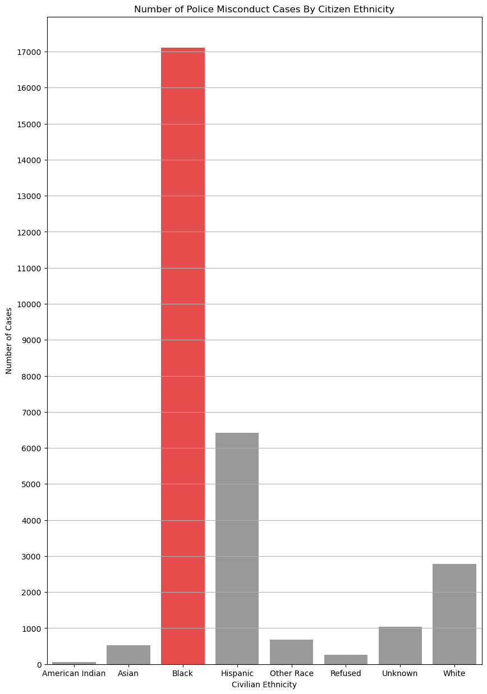
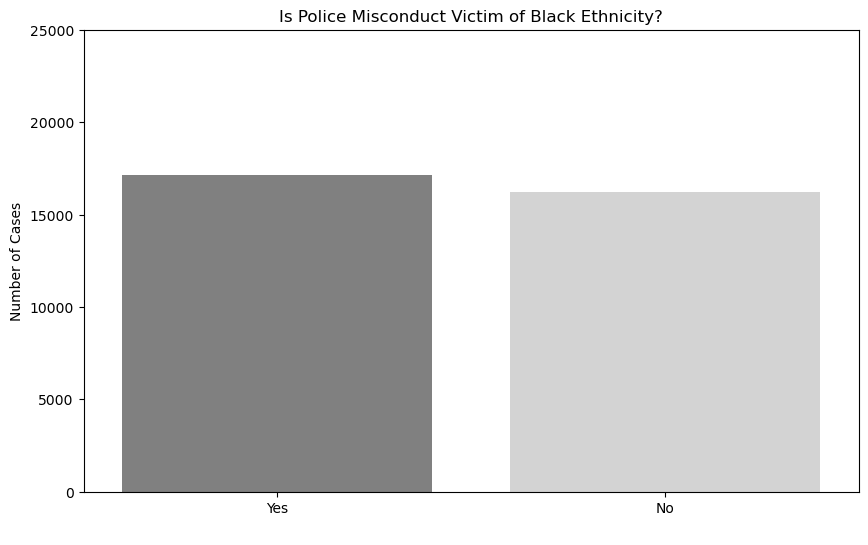

Proposition: New York City police officers tend to commit more misconducts to civilians of Black ethnicities in comparison to civilians of other ethnicities.
FOR the Proposition

Design Decisions and Rationale:
- Bar chart choice & representation (2) : Since the y-axis are the number of complaints for each complainant ethnicity, using a bar chart was the most straightforward way to display and compare count data for different groups.
- Bar colors (-0.5): The use of red color for the ‘Black’ bar in the chart, and gray color for the other bars persuades readers of the disparity between the number of police misconduct cases for NYC civilians of Black ethnicity in comparison to other ethnicities by gravitating their focus towards the highest bar, convincing them that there is racial bias in NYPD activity. When the bars were all different colors, readers’ focus was divided away from the proposition I’m trying to portray, so shifting the focus to one bar worked well.
- Wordplay (-1): Axis titles and chart titles were changed to match the context of the preposition better. The number of complaints in the y-axis is labeled “Number of Cases” to make it as if it is the number of police misconduct cases, even though it is the number of complaints. This deceives readers because complaints do not necessarily mean police misconduct. For the same reason, “Complainant” was changed to “Civilian” to further build a context that matches the preposition.
- Figure height (-0.5): The height of the bar chart was adjusted to be taller than standard to further highlight the difference between the bar with most cases in comparison to the rest. This was done in combination with the range of the y-axis being limited near the height of the biggest bar to make the height gaps between the biggest bar and the rest as tall as possible.
AGAINST the Proposition

Design Decisions and Rationale:
- Category aggregation (-1.5): All other ethnicity categories that are not ‘Black’ are combined into one ‘Non-Black’ category because the number of complaints for civilias of Black ethnicities and number of complaints for civilians that are not of Black ethnicities are almost equal, changing the focus of the chart to answering a ‘Yes’/’No’ question. When the data is presented in this way, the slight difference between the number of ‘Yes’ and ‘No’ makes it more plausible that the proposition is not true.
- Bar chart choice & representation (2) : Since the y-axis are the number of complaints for each complainant ethnicity, using a bar chart was the most straightforward way to display and compare count data for different categories.
- Same shade of bar colors (-0.5): The use of the same shades of colors for both the ‘Black’ bar and ‘Non-Black’ bar in the chart further plants the ‘equal’ notion of both bars’ height in readers’ minds. This wouldn’t be possible if the color of the bars were significantly different. By using the same shade of colors, readers would downplay the slight difference between the two bars, and make them seem more equal.
- Wordplay (-1): Axis titles and chart titles were changed to match the context of the preposition better. The number of complaints in the y-axis is labeled “Number of Cases” to make it as if it is the number of police misconduct cases, even though it is the number of complaints. This deceives readers because complaints do not necessarily mean police misconduct. For the same reason, “Complainant” was changed to “Civilian” to further build a context that matches the preposition.
- Full-range axis (-1): The range of the y-axis was set to be higher than the maximum number of complaints, which is the complete opposite of the previous visualization’s y-axis scale. By using a full-range axis, the difference in height between the ‘Yes’ and ‘No’ will be smaller in comparison if the full-range axis was not used because each y-axis interval is bigger. To readers, this will make the chart more persuasive as it further downplays the difference between the number of cases for civilians of Black ethnicity and not of Black ethnicity, suggesting more equality in proportions between both counts.
Final Reflection
The design process for both visualizations started by doing an EDA on different datasets. During EDA on the NYC Police Complaints dataset, I found that by groupby-ing the data based on “complainant ethnicity” and getting the count per group, there was a clear insight that there were way more complaints made by civilians of Black ethnicity in comparison to other ethnicities. However, visualizing the number of complaints towards the NYPD based on complainant ethnicity doesn’t tell that much of a story. When we assume the number of complaints as the number of “police misconduct cases”, visualizing it based on ethnicity can tell stories about racial bias, leading me to my proposition "New York City police officers tend to commit more misconducts to civilians of Black ethnicities in comparison to civilians of other ethnicities.".
Building the visualization that supported my proposition was easy and straightforward, because it was the visualization that inspired my proposition in the first place. As a result, the visualization mostly used earnest techniques since it was a normal bar chart, displaying raw and clean data from the dataset. The only memorable deceptive technique was changing the colors of the bars to shift the focus of readers towards a specific bar. The color 'red' for the bar I wanted to highlight, and 'grey' for the rest. Building the visualization that opposed my proposition was more difficult, since the raw data did not oppose the proposition. However, an idea popped up in my head about aggregating the Non-Black categories into a single category that fortunately when compared against the Black category, was almost equal in count. As a result, when the amount of 'misconduct cases' made by civilians of Black and non-Black ethnicities were equal, I was able to oppose my proposition. Additional deceptive techniques such as using a full-range axis was also used to further highlight this 'equality'.
Now, I define ethical analysis and visualization as the responsible use of data to represent and communicate information in ways that do not distort or manipulate data to mislead the audience into making incorrect conclusions. The use of misleading scales, inappropriate aggregations, or omitting important context are unhonest ways to represent data that could affect the interpretation of the results. For me, the bounds of "acceptable" persuasive choices versus "misleading" ones depends on the intent and potential impact of the visualization. Acceptable choices aim to highlight trends or patterns in a way that is clear and truthful, while misleading choices may use techniques that obscure the true meaning, such as truncating axes or using disproportionate scaling to exaggerate differences. If no clear bounds can be drawn, this line between "acceptable" and "misleading" is subjective and depends on the potential impact the visualization can create. For example, if a visualization uses a misleading persuasive choice that can cause wrath or protest on a large scale, it is less acceptable compared to a misleading visualization that have smaller potential impact.